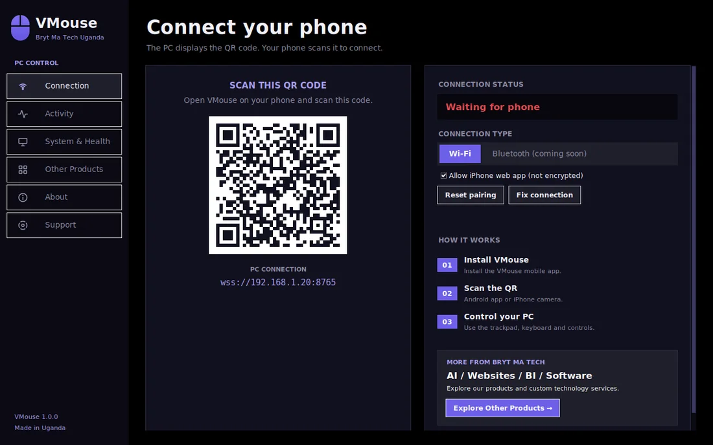
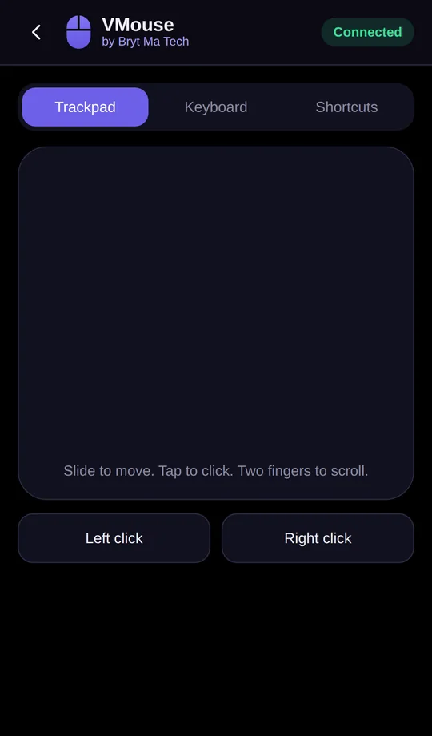
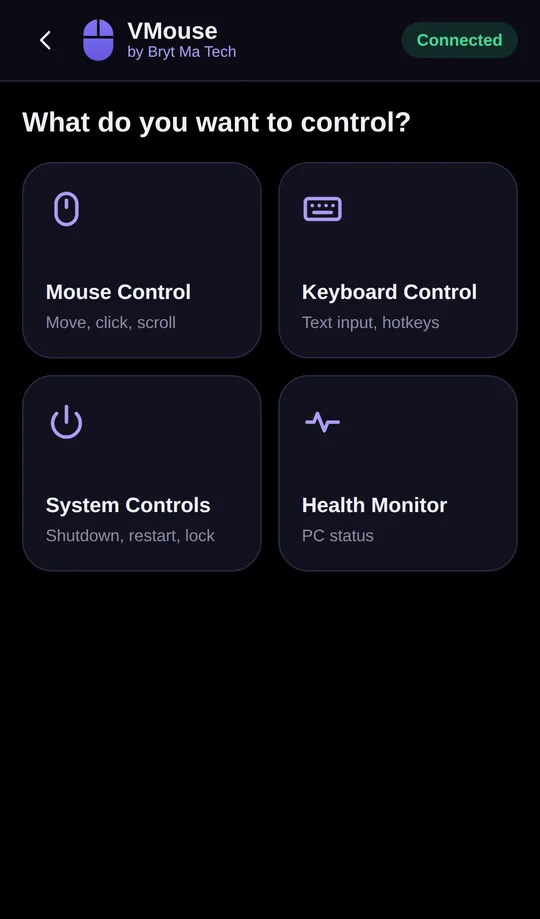
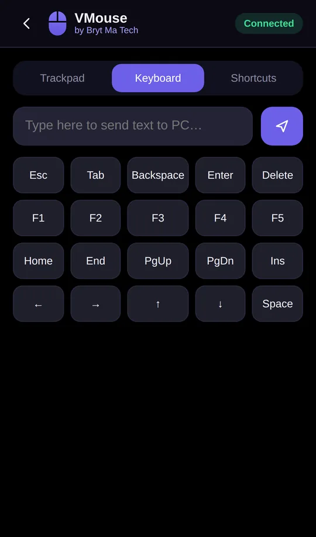
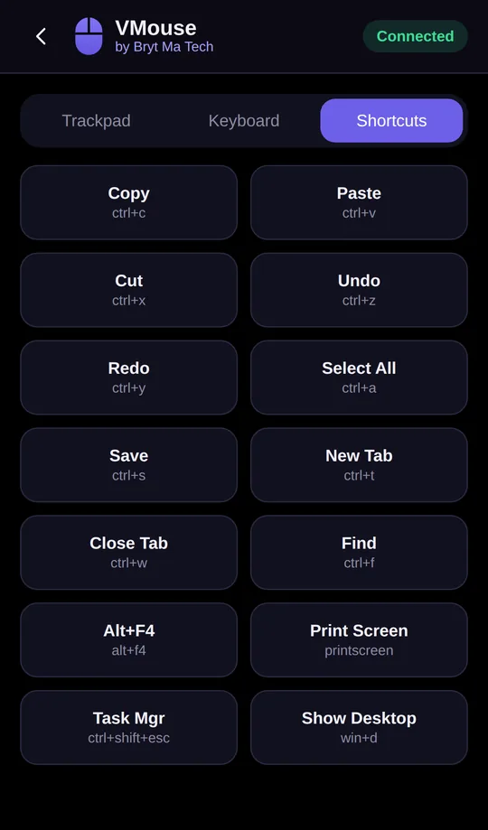
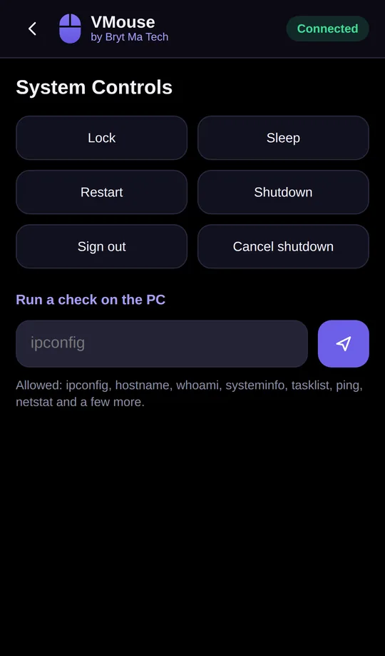

Your phone is now a mouse, keyboard and remote.
Control your computer from the couch, the lecture hall or the meeting room. Open VMouse on your computer, scan the code with your phone, and start moving.
Works on Windows, Mac, Linux, Android and iPhone.


Download
Pick your device
Install VMouse on the computer you want to control. Then use your phone to control it: the Android app, or the camera on an iPhone.
Windows
Windows 10 and 11. Installer with Start menu and desktop shortcut.
Download .exeLatest version: 1.0 · All files and notes
iPhone: how to use VMouse
- Install VMouse on your Windows, Mac or Linux computer and open it.
- Put your iPhone on the same Wi-Fi as the computer.
- Open the iPhone camera and point it at the QR code shown in VMouse. Tap the link that appears.
- To keep it like an app, tap Share, then Add to Home Screen. VMouse must be open on the computer when you use it.
Windows: if Windows warns you
The first time, Windows may say it protected your PC because VMouse is a new program. Click More info, then Run anyway. If your phone cannot connect, press Fix connection in VMouse and choose Yes.
Android: installing the app
Chrome may warn about downloading an app file. Choose Download anyway. When you open the file, Android may ask you to allow installs from your browser. Allow it, then install.
Mac: first time
Unzip the file and move VMouse to Applications. Right-click it and choose Open, then Open again. In System Settings, Privacy and Security, Accessibility, allow VMouse so it can move the mouse. This version is still in beta.
Linux: first time
Extract the file (tar -xzf VMouse-linux.tar.gz), then run ./VMouse. Mouse control needs an X11 session. On the login screen choose the Xorg option instead of Wayland. This version is still in beta.
How it works
Connected in under a minute
No accounts and no cables. Your phone and computer talk over your own Wi-Fi.
Install on your computer
Download VMouse for Windows, Mac or Linux and open it. A QR code appears.
Scan the QR code
On Android, open the VMouse app and scan. On iPhone, use the camera and tap the link.
Start controlling
Slide to move the mouse, tap to click, type, and use shortcuts.
Features
Everything you need from the couch
Built for presentations, lectures, movies and everyday use.
Trackpad
Move, click, right-click, scroll and drag with natural touch gestures.
Keyboard
Type text from your phone, plus Esc, Tab, Enter, arrows and function keys.
Shortcuts
Copy, paste, undo, save, close tab, show desktop and more in one tap.
System controls
Lock, sleep, restart or shut down your computer, with a confirmation first.
Health monitor
See processor, memory, disk and battery status from your phone.
Private by design
Only phones that scanned your code can connect. Reset the code any time.
Screens
A look at the phone




Questions
Good to know
Do my phone and computer need to be on the same Wi-Fi?
Yes. They connect directly over your own Wi-Fi network. If the router blocks devices from seeing each other, turn on your phone's hotspot and connect the computer to it.
Is it safe?
Every connection needs the secret code from the QR code, so only phones that scanned it can connect. The Android app also checks the computer's certificate and connects over an encrypted link. The iPhone web app is not encrypted; you can switch it off in VMouse. Press Reset pairing in VMouse to cut off every phone.
Does it work with Bluetooth?
Not yet. Bluetooth is planned. Today VMouse works over Wi-Fi.
My phone cannot connect. What now?
Check both devices use the same Wi-Fi. On Windows, press Fix connection in VMouse and choose Yes. Then scan the QR code again.
Where do I get help?
Open the Support page inside VMouse, or report a problem on GitHub.